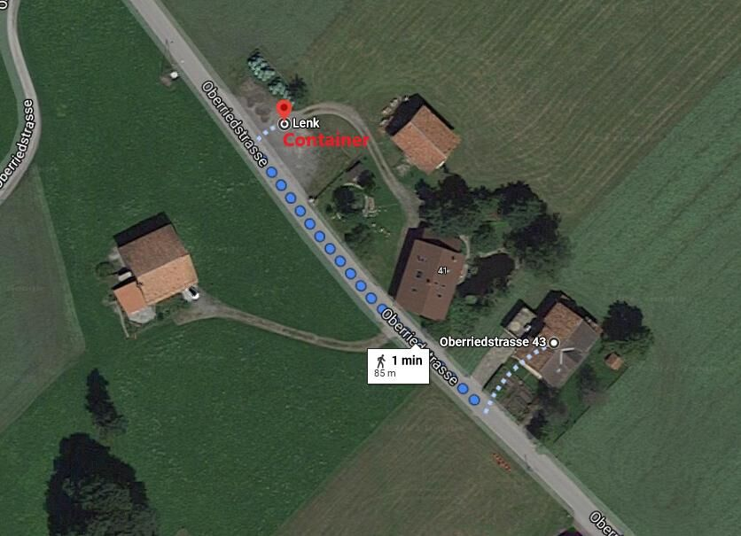

Wohin heute?
Jahreszeit wählen, nach Lust filtern und einen Vorschlag antippen. Die Route erscheint auf der Karte, Links zum Tourenbeschrieb und Fahrplan gleich dabei.
So nah ist alles
Zwei Bahnen, zwei Welten
Betelberg
Gondelbahn ab Talstation Betelberg (Bus «Lenk, Talstation Betelberg», < 10 Min. ab Haus) aufs Leiterli.
- Sommer: Höhenwege, Trotti-Bike zurück ins Tal
- Winter: Familienskigebiet, Schlittelweg, Winterwanderwege
- Das Bergrestaurant Leiterli wird neu gebaut, die Eröffnung ist auf die Wintersaison 2026/27 geplant
Metsch (Stand-Xpress)
10er-Gondelbahn, Talstation 2 Minuten vom Haus. Dort ist auch das Nordic Center für die Loipe.
- Winter: Einstieg ins grosse Skigebiet Adelboden-Lenk mit Hahnenmoos und Verbindung nach Adelboden
- Sommer: Ausgangspunkt für die Wanderung zu den Siebenbrunnen
Schlechtwetter-Programm
Boulderschüür
Boulderhalle in Lenk, auch mit Kurs-Angeboten für Kinder. Mit der Simmental Card vergünstigt.
Hallenbad
Mit der Simmental Card vergünstigt. Bei schönem Wetter lockt das Sprudelbad im Wallbach.
Stube statt Regen
Gesellschaftsspiele liegen im Haus, und der Holzherd macht die Küche gemütlich. So feuert ihr ein.
Oberriedstrasse 43
3775 Lenk im Simmental. Bei jedem Wetter mit Auto und ÖV gut erreichbar.
Wo genau parkiert wird, steht im Gäste-Handbuch.

Nützliche Links
Angaben zu Distanzen, Gehzeiten und Schwierigkeit stammen aus den verlinkten Tourenportalen (Stand November 2026) und weichen je nach Quelle leicht ab. Bitte vor jeder Tour Betriebszeiten, Wetter und Wegzustand prüfen. Die Karte ist eine Skizze und ersetzt keine Wanderkarte.